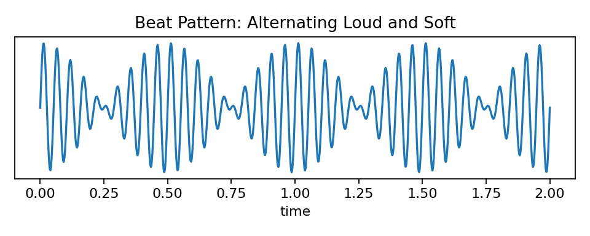

Two guitar strings produce beats that slow down as one string is adjusted. Explain what this tells the musician and use beat-frequency reasoning.
| Fork | Frequency |
|---|---|
| A | 256 Hz |
| B | 260 Hz |
Calculate the beat frequency, explain the pulsing sound, and describe how the beats change as the forks get closer in frequency.
A piano tuner hears 3 beats per second between a string and a reference tone. Explain what the number means and what must happen for the beats to disappear.
A student says beats happen because one instrument is louder. Critique the claim using frequency difference and interference.
Compare tuning by beats with tuning by an electronic display. Explain what evidence each method uses.
A musician hears faster beats after adjusting a string and says the notes are closer together. Critique the statement and correct it.